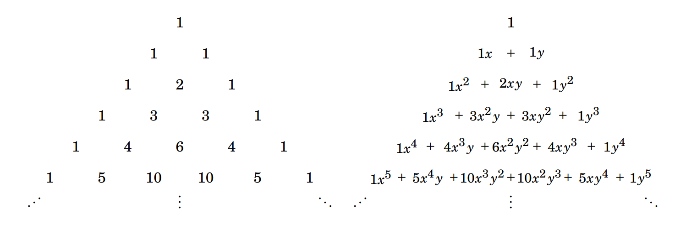

3.6 Pascal’s Triangle and the Binomial Theorem¶
There are some beautiful and significant patterns among the numbers\(\displaystyle \binom{n}{k}\) We now investigate a pattern based on one equation in particular. It happens that
for any integers \(n\) and \(k\) with \(1 \leq k \leq n\).
To see why this is true, notice that the left-hand side \(\displaystyle \binom{n+1}{k}\) is the number of \(k\)-element subsets of the set \(A = \{0,1,2,3,\ldots,n\}\), which has \(n + 1\) elements. Such a subset either contains 0 or it does not. The \(\displaystyle \binom{n}{k-1}\) on the right is the number of subsets of \(A\) that contain 0, because to make such a subset we can start with \(\{0\}\) and append it an additional \(k-1\) numbers selected from \(\{1,2,3,\ldots,n\}\), and there are \(\displaystyle \binom{n}{k-1}\) ways to do this. Also, the \(\displaystyle \binom{n}{k}\) on the right is the number of subsets of \(A\) that do not contain 0, for it is the number of ways to select \(k\) elements from \(\{1,2,3,\dots,n\}\). In light of all this, Equation (3.3) just states the obvious fact that the number of \(k\)-element subsets of A equals the number of \(k\)-element subsets that contain 0 plus the number of \(k\)-element subsets that do not contain 0.
Having seen why Equation (3.3) is true, we now highlight it by arranging the numbers \(\displaystyle \binom{n}{k}\) in a triangular pattern. The left-hand side of Figure 3.3 shows the numbers \(\displaystyle \binom{n}{k}\) arranged in a pyramid with \(\displaystyle \binom{0}{0}\) at the apex, just above a row containing \(\displaystyle \binom{1}{k}\) with \(k = 0\) and \(k = 1\). Below this is a row listing the values of \(\displaystyle \binom{2}{k}\) for \(k = 0,1,2\), and so on.
 Figure 3.3. Pascal’s triangle
Figure 3.3. Pascal’s triangle
Any number \(\displaystyle \binom{n+1}{k}\) for \(0 < k < n\) in this pyramid is just below and between the two numbers \(\displaystyle \binom{n}{k-1}\) and \(\displaystyle \binom{n}{k}\) in the previous row. But Equation (3.3) says \(\displaystyle \binom{n+1}{k} = \binom{n}{k-1} + \binom{n}{k}\). Therefore any number (other than 1) in the pyramid is the sum of the two numbers immediately above it. This pattern is especially evident on the right of Figure 3.3, where each \(\displaystyle \binom{n}{k}\) is worked out. Notice how 21 is the sum of the numbers 6 and 15 above it. Similarly, 5 is the sum of the 1 and 4 above it and so on. This arrangement is called Pascal’s triangle, after Blaise Pascal, 1623– 1662, a French philosopher and mathematician who discovered many of its properties. We’ve shown only the first eight rows, but the triangle extends downward forever. We can always add a new row at the bottom by placing a 1 at each end and obtaining each remaining number by adding the two numbers above its position. Doing this in Figure 3.3 (right) gives a new bottom row: \(1 \quad 8 \quad 28 \quad 56 \quad 70 \quad 56 \quad 28 \quad 8 \quad 1\). This row consists of the numbers \(\displaystyle \binom{8}{k}\) for \(0 \leq k \leq 8\), and we have computed them without the formula \(\displaystyle \binom{8}{k} = \dfrac{8!}{k!(8-k)!}\). Any \(\displaystyle \binom{n}{k}\) can be computed this way. The very top row (containing only 1) of Pascal’s triangle is called Row 0. Row 1 is the next down, followed by Row 2, then Row 3, etc. Thus Row \(n\) lists the numbers \(\displaystyle \binom{n}{k}\) for \(0 \leq k \leq n\). Exercises 3.5.13 and 3.5.14 established
for each \(0 \leq k \leq n\). In words, the \(k\)-th entry of Row \(n\) of Pascal’s triangle equals the \((n-k)\)-th entry. This means that Pascal’s triangle is symmetric with respect to the vertical line through its apex, as is evident in Figure 3.3.
{kind=link}

Figure 3.4. The \(n\)-th row of Pascal’s triangle lists the coefficients of \((x+y)^{n}\)
Notice that Row \(n\) appears to be a list of the coefficients of \((x+y)^{n}\). For example \((x+y)^{2} = \mathbf{1}x^{2} + \mathbf{2}xy + \mathbf{1}y^{2}\), and Row 2 lists the coefficients \(1 \quad 2 \quad 1\). Also \((x+y)^{3} = \mathbf{1}x^{3} + \mathbf{3}x^{2}y + \mathbf{3}xy^{2} + \mathbf{1}y^{3}\), and Row 3 is \(1 \quad 3 \quad 3 \quad 1\). See Figure 3.4, which suggests that the numbers in Row \(n\) are the coefficients of \((x+y)^{n}\). In fact this turns out to be true for every \(n\). This fact is known as the binomial theorem, and it is worth mentioning here. It tells how to raise a binomial \(x+y\) to a non-negative integer power \(n\).
Theorem 3.1: (Binomial Theorem) If \(n\) is a non-negative integer, then \(\displaystyle (x+y)^{n} = \binom{n}{0} x^{n} + \binom{n}{1} x^{n-1}y + \binom{n}{2} x^{n-2}y^{2} + \binom{n}{3} x^{n-3}y^{3} + \ldots + \binom{n}{n-1} xy^{n-1} + \binom{n}{n} y^{n}\).
For now we will be content to accept the binomial theorem without proof. (You will be asked to prove it in an exercise in Chapter 10.) You may find it useful from time to time. For instance, you can use it if you ever need to expand an expression such as \((x+y)^{7}\). To do this, look at Row 7 of Pascal’s triangle in Figure 3.3 and apply the binomial theorem to get \((x+y)^{7} = \mathbf{1}x^{7} + \mathbf{7}x^{6}y + \mathbf{21}x^{5}y^{2} + \mathbf{35}x^{4}y^{3} + \mathbf{35}x^{3}y^{4} + \mathbf{21}x^{2}y^{5} + \mathbf{7}xy^{6} + \mathbf{1}y^{7}\).
For another example,
Exercises for Section 3.6¶
Write out Row 11 of Pascal’s triangle.
Answer
\(\displaystyle \binom{11}{0} = \frac{11!}{0! \cdot (11-0)!} = \frac{11!}{11!} = 1\) \(\displaystyle \binom{11}{1} = \frac{11!}{1! \cdot (11-1)!} = \frac{11 \cdot 10!}{1! \cdot 10!} = 11\) \(\displaystyle \binom{11}{2} = \frac{11!}{2! \cdot (11-2)!} = \frac{11 \cdot 10 \cdot 9!}{2! \cdot 9!} = 55\) \(\displaystyle \binom{11}{3} = \frac{11!}{3! \cdot (11-3)!} = \frac{11 \cdot 10 \cdot 9 \cdot 8!}{3! \cdot 8!} = 165\) \(\displaystyle \binom{11}{4} = \frac{11!}{4! \cdot (11-4)!} = \frac{11 \cdot 10 \cdot 9 \cdot 8 \cdot 7!}{4! \cdot 7!} = 330\) \(\displaystyle \binom{11}{5} = \frac{11!}{5! \cdot (11-5)!} = \frac{11 \cdot 10 \cdot 9 \cdot 8 \cdot 7 \cdot 6!}{5! \cdot 6!} = 462\) \(\displaystyle \binom{11}{6} = \frac{11!}{6! \cdot (11-6)!} = \frac{11 \cdot 10 \cdot 9 \cdot 8 \cdot 7 \cdot 6!}{6! \cdot 5!} = 462\) \(\displaystyle \binom{11}{7} = \frac{11!}{7! \cdot (11-7)!} = \frac{11 \cdot 10 \cdot 9 \cdot 8 \cdot 7!}{7! \cdot 4!} = 330\) \(\displaystyle \binom{11}{8} = \frac{11!}{8! \cdot (11-8)!} = \frac{11 \cdot 10 \cdot 9 \cdot 8!}{8! \cdot 3!} = 165\) \(\displaystyle \binom{11}{9} = \frac{11!}{9! \cdot (11-9)!} = \frac{11 \cdot 10 \cdot 9!}{9! \cdot 2!} = 55\) \(\displaystyle \binom{11}{10} = \frac{11!}{10! \cdot (11-10)!} = \frac{11 \cdot 10!}{10! \cdot 1!} = 11\) \(\displaystyle \binom{11}{11} = \frac{11!}{11! \cdot (11-11)!} = \frac{11!}{11!} = 1\)
Use the binomial theorem to find the coefficient of \(x^{8} y^{5}\) in \((x+y)^{13}\).
Answer
According to the binomial theorem \(\displaystyle (x+y)^{13} = \sum_{k=0}^{13} \binom{13}{k} (x)^{13-k} (y)^{k}\), the coefficient of the term \(x^{8}y^{5}\) in \((x + y)^{13}\) is thus \(\displaystyle \binom{13}{5} x^{8}y^{5} = \frac{13!}{5! \cdot (13-5)!} = \frac{13 \cdot 12 \cdot 11 \cdot 10 \cdot 9 \cdot 8!}{5! \cdot 8!} = 1287\).
Use the binomial theorem to find the coefficient of \(x^{8}\) in \((x+2)^{13}\).
Answer
According to the binomial theorem \(\displaystyle (x+2)^{13} = \sum_{k=0}^{13} \binom{13}{k} (x)^{13-k} (2)^{k}\), the coefficient of the term \(x^{8}y^{5}\) in \((x + y)^{13}\) is thus \(\displaystyle \binom{13}{5} x^{8}y^{5} = \frac{13!}{5! \cdot (13-5)!} = \frac{13 \cdot 12 \cdot 11 \cdot 10 \cdot 9 \cdot 8!}{5! \cdot 8!} = 1287\). Now plug in \(y=2\) in the term \(1287 \cdot x^{8} \cdot y^{5}\) to get the final answer of \(1287 \cdot x^{8} \cdot 2^{5} = 41184x^{8}\).
Use the binomial theorem to find the coefficient of \(x^{6} y^{3}\) in \((3x - 2y)^{9}\).
Answer
According to the binomial theorem \(\displaystyle (3x-2y)^{9} = \sum_{k=0}^{9} \binom{9}{k} (3x)^{9-k} (-2y)^{k}\), the coefficient of the term \(x^{6}y^{3}\) in \((x + y)^{9}\) is thus \(\displaystyle \binom{9}{3} x^{6}y^{3} = \frac{9!}{3! \cdot (9-3)!} = \frac{9 \cdot 8 \cdot 7 \cdot 6!}{3! \cdot 6!} = 84\). Now plug in \(x=3x\) and \(y = -2y\) in the term \(84 \cdot x^{6} \cdot y^{3}\) to get the final answer of \(84 \cdot (3x)^{6} \cdot (-2y)^{3} = 84 \cdot 729x^{6} \cdot -8y^{3} = -489888x^{6}y^{3}\).
Use the binomial theorem to show \(\displaystyle \sum_{k = 0}^{n} \binom{n}{k} = 2^{n}\).
Answer
The binomial theorem: \(\displaystyle (x+y)^{n} = \sum_{k=0}^{n} \binom{n}{k} (x)^{n-k} (y)^{k} = \binom{n}{0} x^{n} + \binom{n}{1} x^{n-1}y + \binom{n}{2} x^{n-2}y^{2} + \binom{n}{3} x^{n-3}y^{3} + \ldots + \binom{n}{n-1} xy^{n-1} + \binom{n}{n} y^{n}\). Observe that \(2^{n} = (1+1)^{n}\). Now use the binomial theorem to work out \((x + y)^{n}\) and plug in \(x = 1\) and \(y = 1\). \(\displaystyle (1+1)^{n} = \sum_{k=0}^{n} \binom{n}{k} \cdot (1)^{n-k} \cdot (1)^{k} = \binom{n}{0} \cdot (1)^{n} \cdot (1)^{0} + \binom{n}{1} \cdot (1)^{n-1} \cdot (1)^{1} + \ldots + \binom{n}{n-1} \cdot (1)^{1} \cdot (1)^{n-1} + \binom{n}{n} \cdot (1)^{0} \cdot (1)^{n} = \binom{n}{0} + \binom{n}{1} + \ldots + \binom{n}{n-1} + \binom{n}{n} = \sum_{k=0}^{n} \binom{n}{k} = 2^{n}\).
Use Definition 3.2 (page 85) and Fact 1.3 (page 13) to show \(\displaystyle \sum_{k = 0}^{n} \binom{n}{k} = 2^{n}\). 🔴
Answer
Definition 3.2: If \(n\) and \(k\) are integers, then \(\displaystyle \binom{n}{k}\) denotes the number of subsets that can be made by choosing \(k\) elements from an \(n\)-element set. We read \(\displaystyle \binom{n}{k}\) as “\(n\) choose \(k\).” Fact 1.3: If a finite set has \(n\) elements, then it has \(2^{n}\) subsets. Let \(A\) be a set with \(n\) elements. By fact 1.3, the total number of subset of \(A\) is \(2^{n}\). Now group the subsets of \(A\) according to how many elements they contain. For each \(k\) with \(0 \leq k \leq n\), let \(S_{k}\) be the set of all \(k\)-element subsets of \(A\). By definition 3.2, the number of elements of \(S_{k}\) is \(\displaystyle |S_{k}| = \binom{n}{k}\). Now it holds that every subset of \(A\) has exactly one size, these subsets are pairwise disjoint (\(\displaystyle S_{i} \cap S_{j} = \varnothing\), for \(i \neq j\)), and the union of all \(S_{k}\) is the set of all subsets of \(A\). Therefore, by the addition principle, \(\displaystyle 2^{n} = |S_{0}| + |S_{1}| + \ldots + |S_{n}| = \binom{n}{0} + \binom{n}{1} + \ldots + \binom{n}{n} = \sum_{k = 0}^{n} \binom{n}{k}\).
Use the binomial theorem to show \(\displaystyle \sum_{k = 0}^{n} 3^{k} \binom{n}{k} = 4^{n}\).
Answer
The binomial theorem: \(\displaystyle (x+y)^{n} = \sum_{k=0}^{n} \binom{n}{k} (x)^{n-k} (y)^{k} = \binom{n}{0} x^{n} + \binom{n}{1} x^{n-1}y + \binom{n}{2} x^{n-2}y^{2} + \binom{n}{3} x^{n-3}y^{3} + \ldots + \binom{n}{n-1} xy^{n-1} + \binom{n}{n} y^{n}\). Observe that \(4^{n} = (1+3)^{n}\). Now use the binomial theorem to work out \((x + y)^{n}\) and plug in \(x = 1\) and \(y = 3\). \(\displaystyle (1+3)^{n} = \sum_{k=0}^{n} \binom{n}{k} \cdot (1)^{n-k} \cdot (3)^{k} = \binom{n}{0} \cdot (1)^{n} \cdot (3)^{0} + \binom{n}{1} \cdot (1)^{n-1} \cdot (3)^{1} + \ldots + \binom{n}{n-1} \cdot (1)^{1} \cdot (3)^{n-1} + \binom{n}{n} \cdot (1)^{0} \cdot (3)^{n} = (3)^{0} \cdot \binom{n}{0} + (3)^{1} \cdot \binom{n}{1} + \ldots + (3)^{n-1} \cdot \binom{n}{n-1} + (3)^{n} \cdot \binom{n}{n} = \sum_{k=0}^{n} 3^{k} \binom{n}{k} = 4^{n}\).
Use Fact 3.5 (page 87) to derive Equation 3.3 (page 90).
Answer
Fact 3.5: If \(0 \leq k \leq n\), then \(\displaystyle \binom{n}{k} = \dfrac{n!}{k! \cdot (n-k)!}\). Otherwise \(\displaystyle \binom{n}{k} = 0\). Equation 3.3: \(\displaystyle \binom {n + 1} {k} = \binom {n} {k - 1} + \binom {n} {k}\) for any integers \(n\) and \(k\) with \(1 \leq k \leq n\). \(\displaystyle \binom {n + 1} {k} = \binom {n} {k - 1} + \binom {n} {k} = \dfrac{n!}{(k-1)! \cdot (n-(k-1))!} + \dfrac{n!}{k! \cdot (n-k)!} = \dfrac{k \cdot n!}{k \cdot (k-1)! \cdot (n-k+1)!} + \dfrac{(n-k+1) \cdot n!}{k! \cdot (n-k+1) \cdot (n-k)!} = \dfrac{n! \cdot (k + (n-k+1))}{k! \cdot (n-k+1)!} = \dfrac{n! \cdot (n+1)}{k! \cdot (n+1-k)!} = \dfrac{(n+1)!}{k! \cdot ((n+1)-k)!} = \binom{n + 1}{k}\)
Use the binomial theorem to show \(\displaystyle \binom{n}{0} - \binom{n}{1} + \binom{n}{2} - \binom{n}{3} + \binom{n}{4} - \cdots + (-1)^{n} \binom{n}{n} = 0\), for \(n > 0\).
Answer
The binomial theorem: \(\displaystyle (x+y)^{n} = \sum_{k=0}^{n} \binom{n}{k} (x)^{n-k} (y)^{k} = \binom{n}{0} x^{n} + \binom{n}{1} x^{n-1}y + \binom{n}{2} x^{n-2}y^{2} + \binom{n}{3} x^{n-3}y^{3} + \ldots + \binom{n}{n-1} xy^{n-1} + \binom{n}{n} y^{n}\). Observe that \(0 = 0^{n} = (1-1)^{n}\). Now use the binomial theorem to work out \((x + y)^{n}\) and plug in \(x = 1\) and \(y = -1\). \(\displaystyle (1-1)^{n} = \sum_{k=0}^{n} \binom{n}{k} \cdot (1)^{n-k} \cdot (-1)^{k} = \binom{n}{0} \cdot (1)^{n} \cdot (-1)^{0} + \binom{n}{1} \cdot (1)^{n-1} \cdot (-1)^{1} + \ldots + \binom{n}{n-1} \cdot (1)^{1} \cdot (-1)^{n-1} + \binom{n}{n} \cdot (1)^{0} \cdot (-1)^{n} = \sum_{k=0}^{n} (-1)^{k} \binom{n}{k} = 0\). Note that \(0^0\) is undetermined/undefined.
Show that the formula \(\displaystyle k \binom{n}{k} = n \binom{n-1}{k-1}\) is true for all integers \(n, k\) with \(0 \leq k \leq n\).
Answer
\(\displaystyle k \binom{n}{k} = k \cdot \frac{n!}{k! \cdot (n-k)!} = \frac{k \cdot n!}{k \cdot (k-1)! \cdot (n-k)!} = \frac{n!}{(k-1)! \cdot (n-k)!}\) \(\displaystyle n \binom{n-1}{k-1} = n \cdot \frac{(n-1)!}{(k-1)! \cdot ((n-1)-(k-1))!} = \frac{n!}{(k-1)! \cdot (n-k)!}\) Therefore \(\displaystyle k \binom{n}{k} = n \binom{n-1}{k-1}\). For \(k = 0\), the formula becomes \(\displaystyle 0 \binom{n}{0} = n \binom{n-1}{-1} = 0\). Note that \(\displaystyle \binom{n}{k} = 0\) whenever \(k < 0\) or \(k > n\).
Use the binomial theorem to show \(\displaystyle 9^{n} = \sum_{k=0}^{n} (-1)^{k} \binom{n}{k} 10^{n-k}\).
Answer
The binomial theorem: \(\displaystyle (x+y)^{n} = \sum_{k=0}^{n} \binom{n}{k} (x)^{n-k} (y)^{k} = \binom{n}{0} x^{n} + \binom{n}{1} x^{n-1}y + \binom{n}{2} x^{n-2}y^{2} + \binom{n}{3} x^{n-3}y^{3} + \ldots + \binom{n}{n-1} xy^{n-1} + \binom{n}{n} y^{n}\). Observe that \(9^{n} = (10-1)^{n}\). Now use the binomial theorem to work out \((x + y)^{n}\) and plug in \(x = 10\) and \(y = -1\). \(\displaystyle 9^{n} = (10-1)^{n} = \binom{n}{0} \cdot (10)^{n} \cdot (-1)^{0} + \binom{n}{1} \cdot (10)^{n-1} \cdot (-1)^{1} + \ldots + \binom{n}{n-1} \cdot (10)^{1} \cdot (-1)^{n-1} + \binom{n}{n} \cdot (10)^{0} \cdot (-1)^{n} = \sum_{k=0}^{n} (-1)^{k} \binom{n}{k} (10)^{n-k}\).
Show that \(\displaystyle \binom{n}{k} \binom{k}{m} = \binom{n}{m} \binom{n-m}{k-m}\).
Answer
\(\displaystyle \binom{n}{k} \binom{k}{m} = \frac{n!}{k! \cdot (n-k)!} \cdot \frac{k!}{m! \cdot (k-m)!} = \frac{n! \cdot k!}{k! \cdot (n-k)! \cdot m! \cdot (k-m)!} = \frac{n!}{m! \cdot (k-m)! \cdot (n-k)!}\) \(\displaystyle \binom{n}{m} \binom{n-m}{k-m} = \frac{n!}{m! \cdot (n-m)!} \cdot \frac{(n-m)!}{(k-m)! \cdot ((n-m)-(k-m))!} = \frac{n! \cdot (n-m)!}{m! \cdot (n-m)! \cdot (k-m)! \cdot (n-k)!} = \frac{n!}{m! \cdot (k-m)! \cdot (n-k)!}\) Therefore \(\displaystyle \binom{n}{k} \binom{k}{m} = \binom{n}{m} \binom{n-m}{k-m}\).
Show that \(\displaystyle \binom{n}{3} = \binom{2}{2} + \binom{3}{2} + \binom{4}{2} + \binom{5}{2} + \dots + \binom{n-1}{2}\).
Answer
Assume \(n \geq 3\) and note that \(\displaystyle \binom{n + 1}{k} = \binom{n}{k} + \binom{n}{k - 1}\) for any integers \(n\) and \(k\) with \(1 \leq k \leq n\). If \(\displaystyle \binom{n + 1}{k} = \binom{n}{3}\), then \(\displaystyle \binom{n}{3} = \binom{n-1}{3} + \binom{n-1}{2} = \binom{n-2}{3} + \binom{n-2}{2} + \binom{n-1}{2} = \ldots = 0 + \binom{2}{2} + \binom{3}{2} + \ldots + \binom{n-2}{2} + \binom{n-1}{2}\).
The first five rows of Pascal’s triangle appear in the digits of powers of 11: \(11^{0} = 1\), \(11^{1}=11\), \(11^{2} = 121\), \(11^{3} = 1331\) and \(11^{4} = 14641\). Why is this so? Why does the pattern not continue with \(11^{5}\)?
Answer
Note that \(\displaystyle 11^{n} = (1 + 10)^{n} = \sum_{k=0}^{n} \binom{n}{k} (1)^{n-k} (10)^{k}\). For \(n=0,1,2,3,4\), all the binomial coefficients in row \(n\) of Pascal’s triangle are single-digit numbers, so they appear directly as the digits of \(11^{n}\). The pattern does not continue for \(11^{5}\) because the fifth row of Pascal’s triangle is \((1,\ 5,\ 10,\ 10,\ 5,\ 1)\), and the numbers \(10\) are not single digits. Therefore carrying occurs in base 10, so the digits are no longer exactly the entries of Pascal’s triangle. The pattern fails because of carrying in base 10 once binomial coefficients become two-digit numbers. \(\displaystyle 11^{0} = (1 + 10)^{0} = \sum_{k=0}^{0} \binom{0}{k} (1)^{0-k} (10)^{k} = \binom{0}{0} (1)^{0} (10)^{0} = \mathbf{1} \cdot 1 = 1\) \(\displaystyle 11^{1} = (1 + 10)^{1} = \sum_{k=0}^{1} \binom{1}{k} (1)^{1-k} (10)^{k} = \binom{1}{0} (1)^{1} (10)^{0} + \binom{1}{1} (1)^{0} (10)^{1} = \mathbf{1} \cdot 1 + \mathbf{1} \cdot 10 = 11\) \(\displaystyle 11^{2} = (1 + 10)^{2} = \sum_{k=0}^{2} \binom{2}{k} (1)^{2-k} (10)^{k} = \binom{2}{0} (1)^{2} (10)^{0} + \binom{2}{1} (1)^{1} (10)^{1} + \binom{2}{2} (1)^{0} (10)^{2} = \mathbf{1} \cdot 1 + \mathbf{2} \cdot 10 + \mathbf{1} \cdot 100 = 121\) \(\displaystyle 11^{3} = (1 + 10)^{3} = \sum_{k=0}^{3} \binom{3}{k} (1)^{3-k} (10)^{k} = \binom{3}{0} (1)^{3} (10)^{0} + \binom{3}{1} (1)^{2} (10)^{1} + \binom{3}{2} (1)^{1} (10)^{2} + \binom{3}{3} (1)^{0} (10)^{3} = \mathbf{1} \cdot 1 + \mathbf{3} \cdot 10 + \mathbf{3} \cdot 100 + \mathbf{1} \cdot 1000 = 1331\) \(\displaystyle 11^{4} = (1 + 10)^{4} = \sum_{k=0}^{4} \binom{4}{k} (1)^{4-k} (10)^{k} = \binom{4}{0} (1)^{4} (10)^{0} + \binom{4}{1} (1)^{3} (10)^{1} + \binom{4}{2} (1)^{2} (10)^{2} + \binom{4}{3} (1)^{1} (10)^{3} + \binom{4}{4} (1)^{0} (10)^{4} = \mathbf{1} \cdot 1 + \mathbf{4} \cdot 10 + \mathbf{6} \cdot 100 + \mathbf{4} \cdot 1000 + \mathbf{1} \cdot 10000 = 14641\) \(\displaystyle 11^{5} = (1 + 10)^{5} = \sum_{k=0}^{5} \binom{5}{k} (1)^{5-k} (10)^{k} = \binom{5}{0} (1)^{5} (10)^{0} + \binom{5}{1} (1)^{4} (10)^{1} + \binom{5}{2} (1)^{3} (10)^{2} + \binom{5}{3} (1)^{2} (10)^{3} + \binom{5}{4} (1)^{1} (10)^{4} + \binom{5}{5} (1)^{0} (10)^{5} = \mathbf{1} \cdot 1 + \mathbf{5} \cdot 10 + \mathbf{10} \cdot 100 + \mathbf{10} \cdot 1000 + \mathbf{5} \cdot 10000 + \mathbf{1} \cdot 100000 = 161051\)